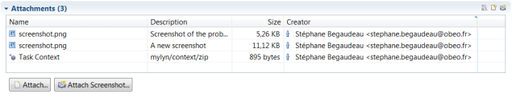

In order to install the connector, you can use the Eclipse Marketplace available from the "Help -> Eclipse Marketplace" menu. In the marketplace, you just have to search for Tuleap in order to find the latest version of the connector available.
To establish a connection with a Tuleap server, you need to go in the Task Repositories or Team Repositories view in order to create a new Mylyn repository. Select the Task connector "Tuleap Repository Connector" and click next.

In the next page of the wizard, you have access to the page used to connect to the Tuleap server. Use the URL of the trackers of your Tuleap project along with your Tuleap username and password to connect to the Tuleap server as shown in the following screenshot.

Your login and password will be valited prior to the connection but you can force the verification to ensure that your credentials are valid. Do not forget to make sure that the connector will remember your password by checking the associated checkbox.
Once you have created your repository, Mylyn Task will ask you to create a query in order to retrieve your tasks from the Tuleap server. You can use the new Query wizard in order to create your query. First you will have to select the project for which you want to create the query.
Once your project is selected, you will see the list of all the trackers of the selected project.
In this wizard, you can create two kinds of queries: locally created ones or queries saved on the server. In your Tuleap project, you may have created reports in order to vizualize a specific set of tasks matching a set of critera, you can execute those reports directly from the Mylyn Connector for Tuleap. you can also define new queries directly in Eclipse.
You can access your reports from the third page of the wizard or you can continue to the fourth page to create a custom query.
When your query has been executed by Mylyn Task, its result will be available in the Task List view. In this view, you can see the list of the tasks matching your query along with the completion of the query.
If you want to display a specific task, you just have to double click on it from the Task List view.

Once modified, you can update the task on the Tuleap server by using the "Submit" button on top of the editor.
If the configuration of your Tuleap tracker allows it, you can add attachments to your task directly from the Tuleap task editor.
You can also use the screenshot tooling to directly attach a screenshot with various annotations.

Mylyn Task will let you activate a specific task thanks to the round button in the Task List view and at the top of the task editor. Once a task has been activated, all manipulated elements will be linked with the active task. You can see those linked element in the context tab of the task editor. When you are done working on a specific task, you just need to uncheck the activate task button. The task and its context will then be closed.

You can easily retrieve the context of a task by re-activating it. All the elements of the context that you had used will be reopened.
You can easily attach the context of a task as an attachment and submit it on the Tuleap server. You can retrieve the context from an attachment too.